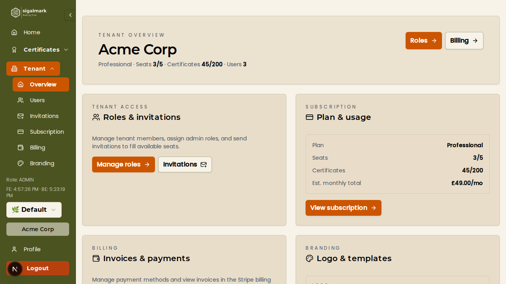
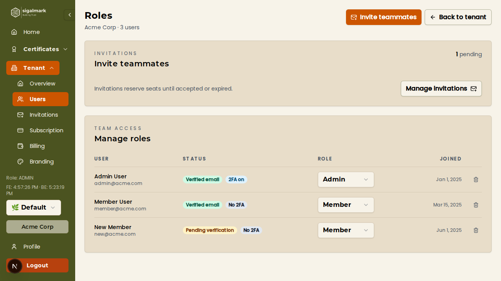
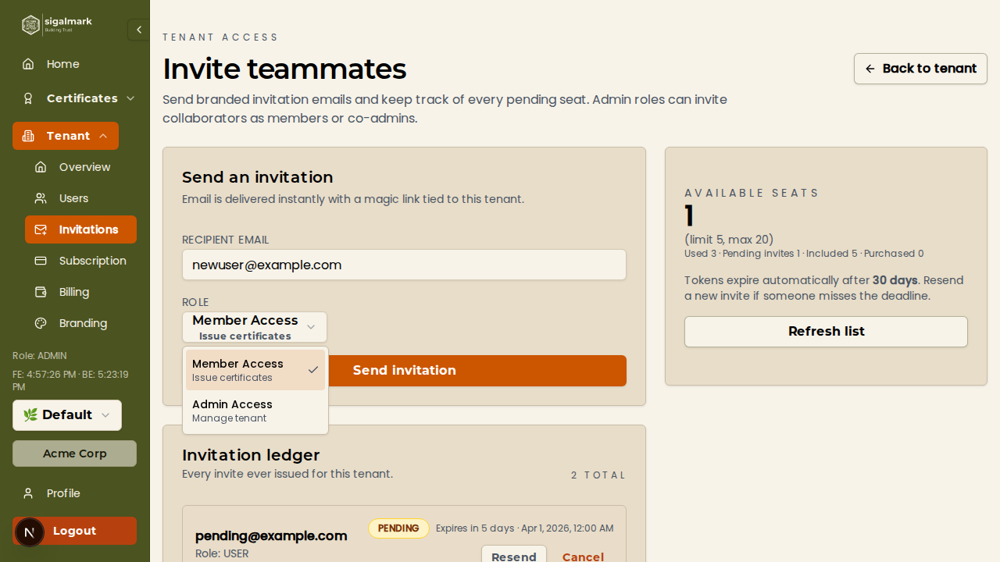
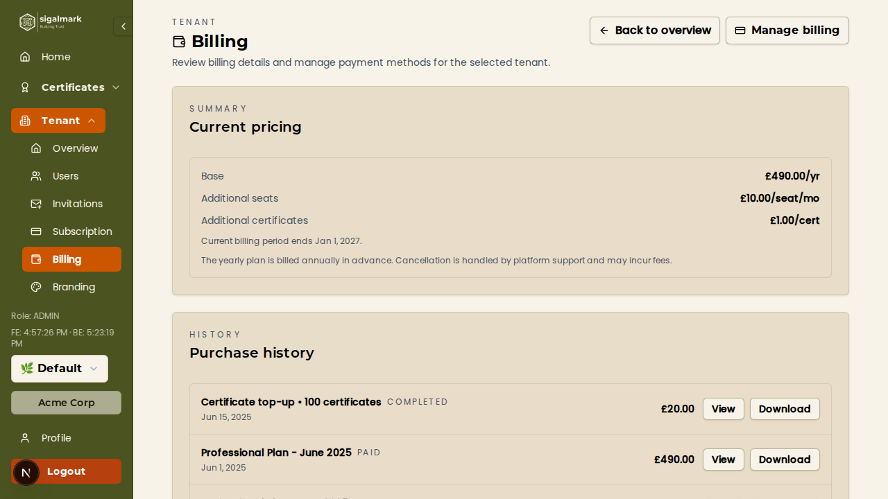
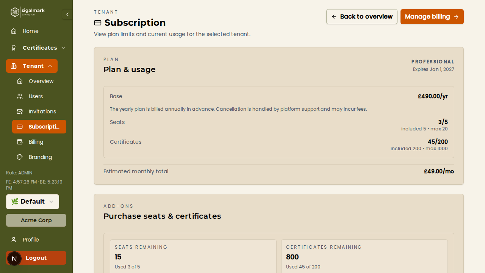
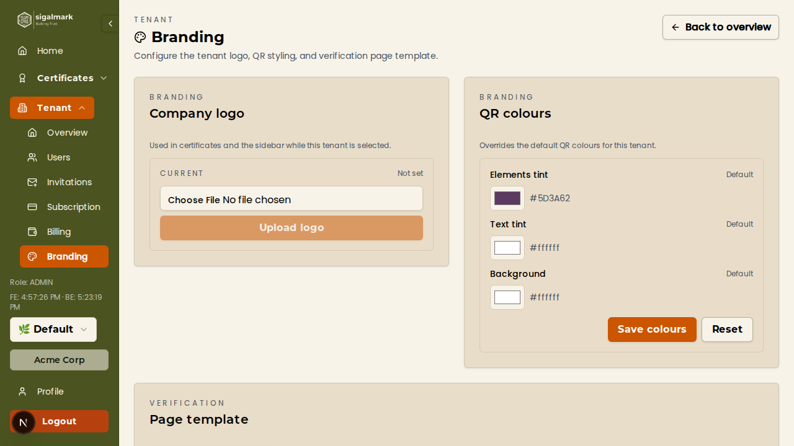

Admin Tutorial
A comprehensive guide for Tenant Admins — manage your organisation's members, billing, branding, and certificates.
Who is this for?
This tutorial is for users with the
Admin role within an organisation. Admins have full control over tenant settings, member management, billing, branding, and certificates. If you are a regular Member, see the
User Tutorial instead.
1. Tenant Dashboard
The Tenant Dashboard is your central hub for managing your organisation. It gives you an at-a-glance view of your subscription status, resource usage, and quick actions.
- Log in to the Sigalmark platform with your Admin account.
- Click Tenant in the sidebar navigation to open the tenant console.
-
Review the dashboard cards:
- Subscription Status — Shows your current plan name, billing interval (monthly or yearly), and whether the subscription is active or expired.
- Seat Usage — Displays how many member seats are occupied out of your plan's total allocation (e.g., 3 / 5 seats used).
- Certificate Usage — Shows the number of certificates issued against your plan's certificate quota.
- Use the quick action buttons to navigate directly to Members, Branding, Subscription, or Billing settings.

Tip
If your subscription has expired, a banner will appear at the top of the dashboard with a link to renew. You will not be able to issue new certificates until the subscription is renewed.
2. Member Management
The Members page lets you view everyone in your organisation, check their account status, and manage their roles.
- Navigate to Tenant > Members from the sidebar or the dashboard quick actions.
-
Review the member list. Each row displays:
- Name and Email — The member's display name and registered email address.
- Role — Either Member or Admin.
- Email Verified — Indicates whether the member has verified their email address.
- 2FA Status — Shows whether the member has enabled two-factor authentication.
-
To change a member's role:
- Click the actions menu (three dots) on the member's row.
- Select Change Role.
- Choose the new role — Member or Admin.
- Confirm the change. The member's permissions will update immediately.
-
To remove a member:
- Click the actions menu on the member's row.
- Select Remove Member.
- Confirm the removal in the dialog. The member will lose access to the organisation immediately.

Note
You cannot remove yourself from the organisation or change your own role. There must always be at least one Admin in the organisation.
3. Invitations
Invite new team members to join your organisation by sending email invitations. You can control what role they receive when they join.
3.1 Send a New Invitation
- Navigate to Tenant > Invitations (or click Invite Member from the Members page).
- Enter the invitee's email address in the form field.
- Select the role to assign — Member or Admin.
- Click Send Invitation.
- The invitee will receive an email with a link to accept the invitation and join your organisation.

3.2 View Pending Invitations
- Below the invitation form, you will see a table of all invitations that have been sent.
-
Each invitation shows:
- Email — The address the invitation was sent to.
- Role — The role assigned to the invitation.
- Status — The current state of the invitation.
- Sent Date — When the invitation was originally sent.
3.3 Resend or Cancel an Invitation
- Find the pending invitation in the list.
- Click Resend to send another email to the invitee (useful if the original email was missed or expired).
- Click Cancel to revoke the invitation. The invitation link will no longer work.
3.4 Invitation Lifecycle
Every invitation follows a defined lifecycle:
- PENDING — The invitation has been sent and is awaiting the recipient's response.
- ACCEPTED — The recipient clicked the link, registered (or logged in), and joined the organisation.
- EXPIRED — The invitation was not accepted within the validity period and has automatically expired.
- CANCELLED — An Admin manually cancelled the invitation before it was accepted.
Tip
If an invitation has expired, you can simply send a new invitation to the same email address. You do not need to wait or take any additional steps.
4. Billing & Payments
The Billing page provides an overview of your organisation's financial details and gives you access to the Stripe billing portal for managing payment methods and invoices.
- Navigate to Tenant > Billing from the sidebar.
-
Review the billing summary:
- Current Plan — The name of your active subscription plan.
- Billing Interval — Whether you are billed monthly or yearly.
- Next Billing Date — The date your subscription will next renew.
- Payment Status — Whether your last payment was successful.
-
Click Manage Billing to open the Stripe billing portal in a new tab. From there you can:
- Update your payment method (credit card, bank account).
- View and download past invoices.
- Update your billing address.
-
Scroll down to view the Invoice History table, which lists recent charges including subscription payments and add-on purchases.

5. Subscription Management
The Subscription page shows your current plan details and lets you purchase additional seats or certificate top-ups as your organisation grows.
5.1 View Current Plan
- Navigate to Tenant > Subscription.
-
Review your plan details:
- Plan Name — The tier you are subscribed to.
- Seats — Number of seats used versus total available.
- Certificates — Number of certificates issued versus your quota.
- Status — Active, expired, or pending renewal.
5.2 Purchase Additional Seats
- In the Subscription page, locate the Add Seats section.
- Enter the number of additional seats you need.
- Click Purchase Seats.
- You will be redirected to the Stripe checkout page to complete payment.
- Once payment is confirmed, the new seats are immediately available and you can invite additional members.
5.3 Purchase Certificate Top-Ups
- In the Subscription page, locate the Certificate Top-Up section.
- Select the number of additional certificates you want to purchase.
- Click Purchase Certificates.
- Complete the Stripe checkout. The additional certificate quota is added to your plan immediately.
5.4 Renew an Expired Subscription
- If your subscription has expired, a Renew Subscription button will appear on the Subscription page (and on the dashboard banner).
- Click Renew Subscription.
- Complete the Stripe checkout to reactivate your plan.
- Once renewed, all features including certificate issuance will be restored.

Note
Add-on purchases (seats and certificate top-ups) are one-time charges that supplement your existing plan. They do not change your base subscription tier.
6. Branding & Customisation
Personalise your organisation's certificates and verification pages with custom branding. Your branding settings affect the QR codes printed on certificates and the public verification page that recipients see.
6.1 Upload Organisation Logo
- Navigate to Tenant > Branding.
- In the Organisation Logo section, click the upload area or drag and drop your logo file.
- Supported formats include PNG, JPG, and SVG. For best results, use a square image with a transparent background.
- Click Save to apply. The logo will appear in the centre of your branded QR codes.
6.2 Set QR Code Tint Colours
- In the QR Code Colours section, you will see colour pickers for three properties:
- Elements Colour — The colour of the QR code dots and patterns.
- Text Colour — The colour of any text rendered around the QR code (e.g., margin text).
- Background Colour — The background colour behind the QR code.
- Click each colour picker to choose your desired colour, or enter a hex code directly.
- A live preview of the QR code updates as you adjust colours.
- Click Save to apply your colour settings to all future QR codes.
6.3 Select Verification Page Template
- In the Verification Template section, browse the available templates.
- Select a template that matches your organisation's style. Templates control the layout and appearance of the public verification page shown when someone scans a certificate's QR code.
- Configure any template-specific options (e.g., header style, colour scheme).
- Click Save to apply.
6.4 Upload Gradient / Custom Logo
- If your chosen template supports a gradient or custom logo overlay, you will see an additional upload section.
- Upload a gradient image or secondary logo to be displayed on the verification page.
- Adjust positioning and sizing options as needed.
- Click Save to apply.

Tip
Changes to branding settings apply to all future certificates. Existing certificates retain the branding that was active when they were issued. To update an existing certificate's QR code, you can regenerate it from the certificate detail page.
7. Certificate Management
As an Admin, you have all the same certificate management capabilities as regular Members — including creating, editing, minting, revoking, and verifying certificates. For a detailed walkthrough of these features, refer to the User Tutorial.
7.1 Standard Certificate Operations
Admins can perform all standard certificate operations:
- Create certificates — Issue individual certificates or batch-upload via CSV.
- Edit certificates — Update recipient details, metadata, and certificate content.
- Mint certificates — Publish certificates to the blockchain as ERC-721 NFTs.
- Revoke certificates — Mark certificates as revoked (recorded on-chain).
- Verify certificates — Check the on-chain status of any certificate.
- Download QR codes — Generate and download branded QR code images.
7.2 Advanced Blockchain Overrides (Admin Only)
Admins have access to advanced blockchain configuration options that are not available to regular Members. These settings allow fine-grained control over how certificates are minted on the blockchain.
- Open a certificate's detail page or the certificate creation form.
-
Look for the Advanced Blockchain Settings section (visible only to Admins):
- Contract Address — Override the default ERC-721 contract address used for minting. This is useful if your organisation operates multiple smart contracts or is migrating to a new contract.
- Network ID — Override the default blockchain network. This allows you to mint certificates on a different EVM-compatible chain (e.g., switching between testnet and mainnet, or between different chains).
- Enter the custom contract address and/or network ID.
- Proceed with minting as normal. The certificate will be minted using the specified overrides instead of the tenant defaults.
Warning
Blockchain overrides are an advanced feature. Entering an incorrect contract address or network ID can result in failed transactions or certificates that cannot be verified. Only modify these settings if you understand the implications. When in doubt, use the default values configured for your organisation.